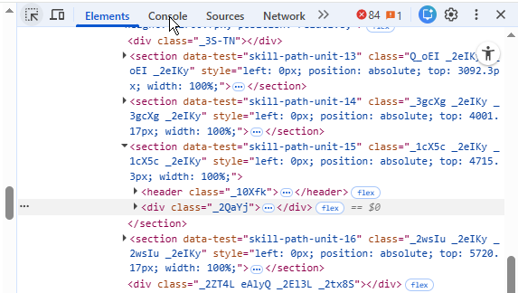
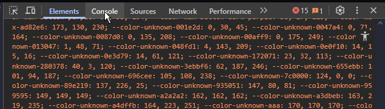
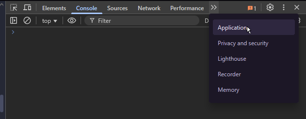
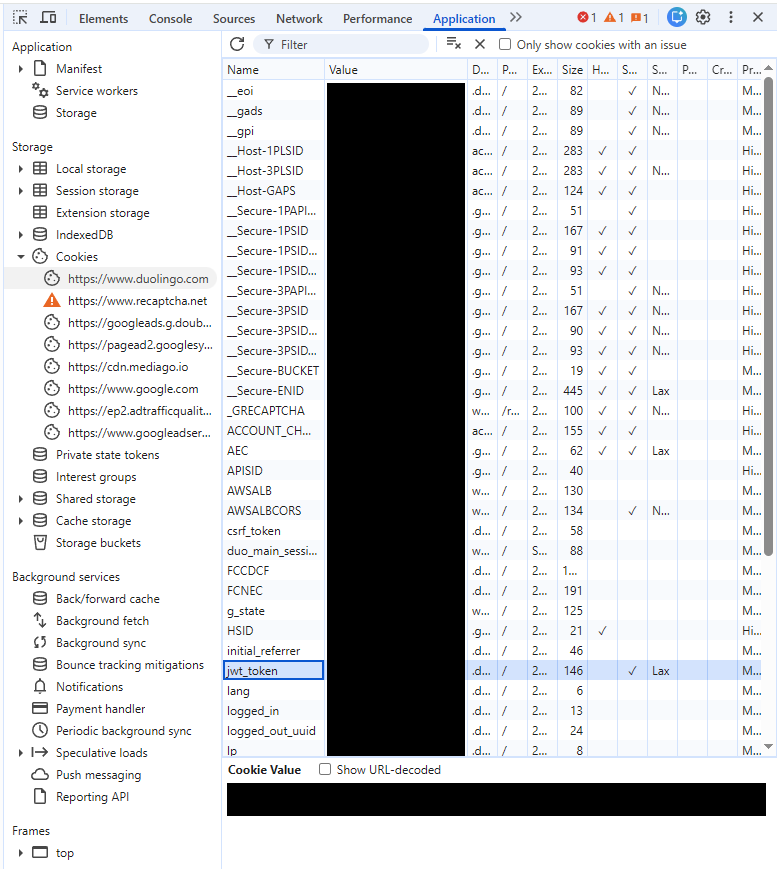
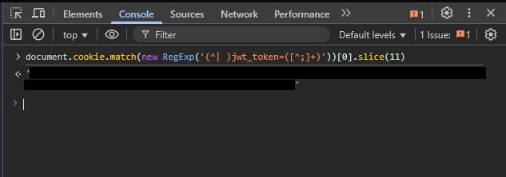

How to obtain JWT token
Step 1: Log-in to Duolingo
Step 2: Open Developer tools

- Right click anywhere on the page
- Table should appear
- Select Inspect and click on it

- Right click anywhere on the page
- Table should appear
- Select Inspect and click on it
Step 3: Change tab in Developer tools

- Change to Console tab

- Change to Application tab

- Change to Console tab

- Change to Application tab
Step 4: Use the JWT token

- Copy code from README.md
- Paste the code into the console
- Press Enter
- Copy the returned JWT token

- Find section Storage
- Find section Cookies and open it
- Find address for Duolingo (https://www.duolingo.com) and click on it
- You will see multiple cookies, find and select one called "jwt_token" and click on it
- Under the table (Cookie value) you will see your JWT token, you can Copy it and use in HomeAssistant

- Copy code from README.md
- Paste the code into the console
- Press Enter
- Copy the returned JWT token

- Find section Storage
- Find section Cookies and open it
- Find address for Duolingo (https://www.duolingo.com) and click on it
- You will see multiple cookies, find and select one called "jwt_token" and click on it
- Under the table (Cookie value) you will see your JWT token, you can Copy it and use in HomeAssistant